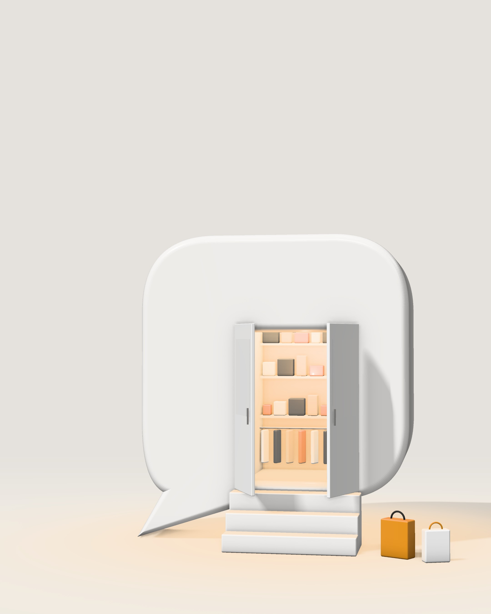
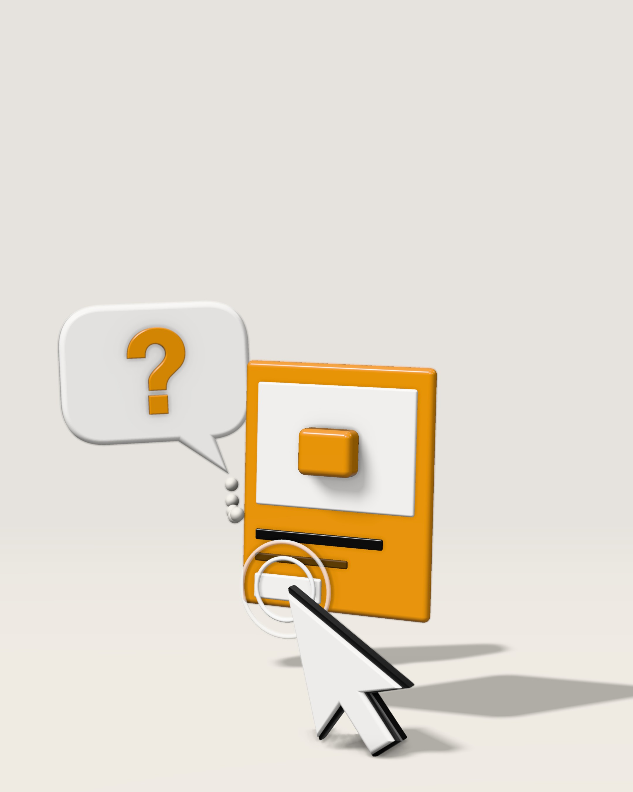
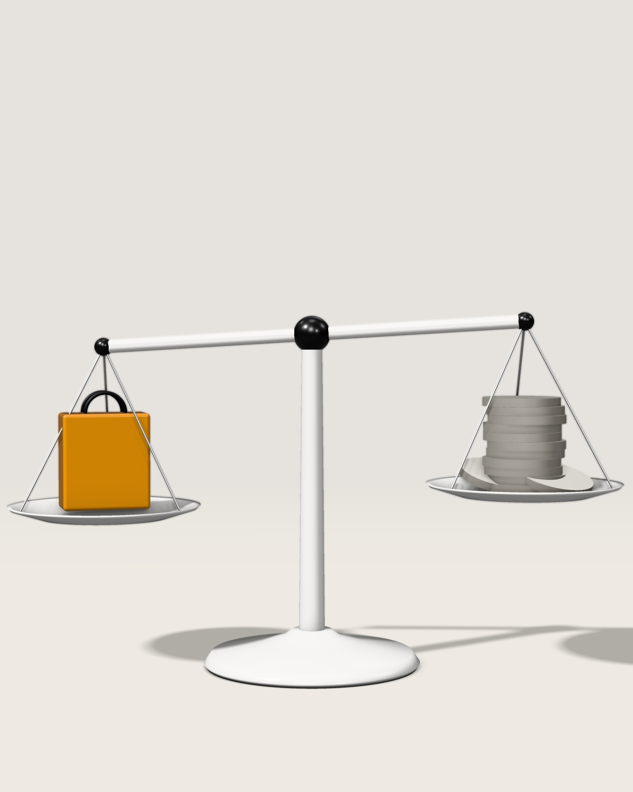
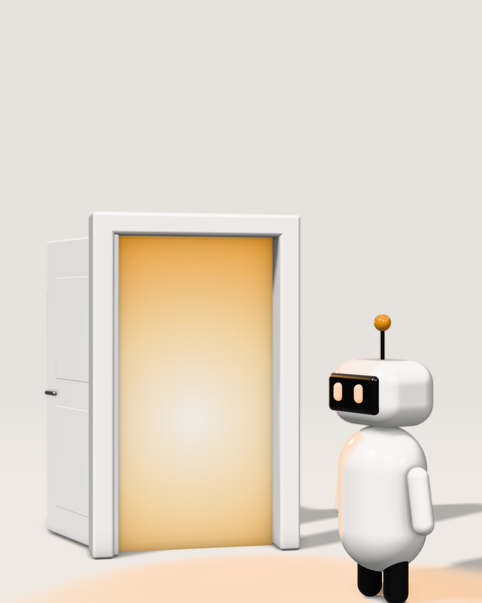
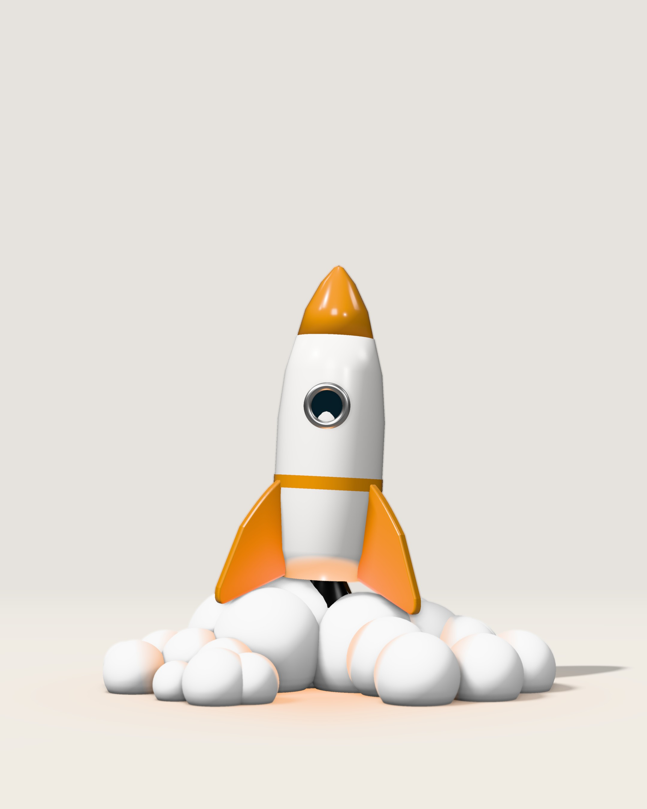
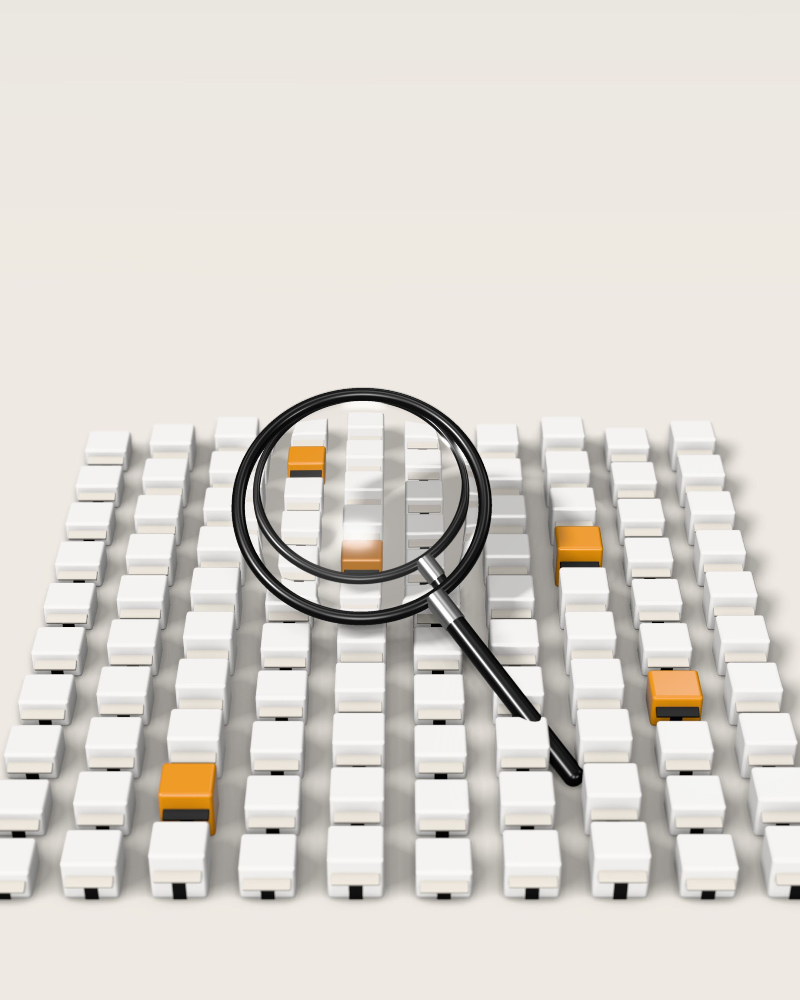

Nie ma cię
w rozmowie.
Reklamy w ChatGPT dla polskich firm. Jak działają, czy są dla Ciebie i jak uruchomić pierwszą kampanię w 7 dni.
Dla kogo i jak czytać
Ten e-book jest dla Ciebie, jeśli
- prowadzisz sklep internetowy, usługi lokalne, hotel, kursy online albo aplikację,
- samodzielnie ustawiasz reklamy w Google lub Meta albo zlecasz je agencji,
- chcesz wiedzieć, czy reklamy w ChatGPT mają sens, zanim wydasz pierwszą złotówkę.
Nie jest dla Ciebie, jeśli
sprzedajesz usługi finansowe, zdrowotne albo prawne. Poza USA te kategorie są dziś zablokowane – więcej w rozdziale 03.
Jak czytać – 15 minut
- 5 minut – rozdziały 01–03. Zrozumiesz, jak działa ten kanał, i ocenisz, czy dotyczy Twojej firmy.
- 10 minut – rozdziały 04–07. Przygotujesz stronę, pomiar i pierwszą kampanię.
- Na koniec – ściąga ze str. . Wydrukuj ją i trzymaj przy biurku.
Każdy rozdział kończy się ramką „Do zrobienia dziś” – od 1 do 3 działań, które wykonasz jeszcze tego samego dnia.
Stan wiedzy: 28.09.2026
Fakty sprawdziliśmy w dokumentacji OpenAI – źródła z datami są na str. . Program reklamowy szybko się zmienia, więc przed startem porównaj zasady z panelem.
KSIGN nie jest powiązany z OpenAI. Ten e-book nie jest materiałem OpenAI ani przez OpenAI zatwierdzonym. ChatGPT i OpenAI są znakami towarowymi OpenAI.
Spis treści
- 01Klient już rozmawiaDlaczego wybór przenosi się do rozmowy z AI
- 02Jak to działaOd pytania do kliknięcia i to, za co płacisz
- 03Czy to dla Ciebie?Test w 60 sekund: branża, klienci, budżet, pomiar
- 04Test drzwiKonto, strona i pomiar przed pierwszą złotówką
- 05Pierwsza kampania w 7 dniPlan dzień po dniu, formuła CKK, wzory reklam
- 06Budżet i pomiarKalkulator na kartce i reguły 14 i 30 dni
- 079 błędówCo przepala budżet i co zrobić zamiast tego
- 08BadanieSprawdziliśmy 100 polskich sklepów
- +Ściąga · 3 kroki · Słowniczek i źródła
Klient już
rozmawia.
Wybór coraz częściej zapada w rozmowie z AI, zanim klient trafi na Twoją stronę.
13 mln Polaków pyta AI
31.08: płatne miejsce w rozmowie
13 mln Polaków pyta AI
Źródło: Gemius/PBI, marzec 2026. Narzędzia AI oparte na dużych modelach językowych.
Wyszukiwarka daje listę linków. Rozmowa daje gotową odpowiedź. Klient nie wpisuje „sofa 3-osobowa”. Pisze: „Mam salon 16 m², dwoje dzieci i psa. Jaka sofa wytrzyma 5 lat i zmieści się w 3000 zł?”
- Pytanie zamiast frazy. Klient opisuje sytuację, budżet i ograniczenia.
- Odpowiedź zamiast listy. AI porównuje oferty i zawęża wybór za klienta.
- Decyzja zapada wcześniej. Porównanie może się odbyć, zanim klient trafi na Twoją stronę.
Nie musisz rezygnować z Google ani Meta. Musisz za to wiedzieć, co dzieje się w rozmowie, w której Twój klient wybiera – i kto jest w niej zamiast Ciebie.
31.08: płatne miejsce w rozmowie
Od 31 sierpnia 2026 r. każda firma w Polsce może sama kupić reklamę w ChatGPT – w panelu Ads Manager, bez pośredników.
W nowych kanałach konkurencja w aukcji zwykle rośnie z czasem. Nie wiemy, jak długo potrwa start z mniejszą liczbą reklamodawców. Wiemy za to, że wnioski z pierwszych kampanii zostaną w firmach, które je przeprowadzą.
- Wypisz 3 pytania, które klienci najczęściej zadają Ci przed zakupem – z maili, telefonów i czatu.
- Zadaj je ChatGPT tak, jak zrobiłby to klient: z budżetem, miastem i ograniczeniami.
- Zapisz, kogo ChatGPT poleca, czy pada Twoja marka i czy pod odpowiedzią widać czyjąś reklamę.
Reklamy zobaczysz na koncie Free lub Go albo bez logowania – nie w czacie tymczasowym.

Jak to
działa.
Reklama odpowiada na sytuację z rozmowy, nie na słowo kluczowe. Płacisz za kliknięcie albo wyświetlenie.
Od pytania do kliknięcia · Anatomia reklamy
Kto widzi, a kto nie · Jak płacisz + 3 mity
Od pytania do kliknięcia
Reklama nie reaguje na słowo kluczowe. Reaguje na sytuację, którą klient opisał w rozmowie.
Rozmowa
Klient pisze: „Szukam hotelu w Zakopanem na długi weekend, z basenem i miejscem dla psa”.
Dopasowanie
System czyta kontekst rozmowy i porównuje go ze stroną, tytułem, opisem, wskazówkami i kierowaniem.
Aukcja
Gdy pasuje kilka reklam, decyduje trafność razem ze stawką. Sama stawka nie wystarczy.
Karta
Reklama pojawia się pod odpowiedzią – oznaczona jako sponsorowana i oddzielona od niej.
Pomiar
Kliknięcie prowadzi na Twoją stronę. UTM i pixel (po zgodzie) pokazują, co klient zrobił dalej.
Reklama nie zmienia odpowiedzi. OpenAI deklaruje, że odpowiedzi powstają niezależnie od reklam. Reklamodawca nie widzi rozmów – dostaje tylko zbiorcze wyniki.
Anatomia reklamy
Dwa formaty: karta reklamy i karuzela produktów z feedu. Oba pod odpowiedzią, oznaczone jako sponsorowane. Wideo nie ma.
- Oznaczenie „sponsorowane” – dodaje je system.
- Nazwa firmy i favicon – ikona Twojej strony.
- Obraz – kwadrat, min. 256 × 256 px. Produkt albo efekt usługi.
- Tytuł – do 50 znaków. Efekt dla klienta, najważniejsze słowa na początku.
- Opis – do 100 znaków. Dowód: liczba, termin albo gwarancja.
- Strona docelowa – konkretna podstrona z UTM, nie strona główna.
Karuzela produktów z feedu
Kilka produktów z jednego sklepu w jednej reklamie. Zdjęcie, nazwę, cenę i atrybuty system bierze z feedu.
Feed: plik, stały URL albo SFTP. Pozycje z pliku wygasają po 2 tygodniach. Tylko cały kraj.
Uwaga: „Text customization”
Domyślnie włączona. AI tworzy spersonalizowane i przetłumaczone wersje Twojego tytułu i opisu i może je wyświetlać bez Twojej akceptacji.
Wyłącz, jeśli każde zdanie musi przejść akceptację.
Nie rób reklamy, która naśladuje wygląd albo głos ChatGPT: bez dymków czatu i bez „Jako asystent AI polecam…”.
Karuzela: sprawdź dostępność na swoim koncie. Limity 50/100 znaków – stan na 24.09.2026.
Kto widzi, a kto nie
Nie każdy użytkownik ChatGPT zobaczy Twoją reklamę. Zanim policzysz budżet, sprawdź, czy Twój klient jest w tej grupie.
Widzą reklamy
- Plan Free
- Plan Go
- Niezalogowanitylko reklamy odpowiednie dla każdego wieku
Nie widzą
- Plus, Pro, Business, Enterprise i Edu
- Konta osób poniżej 18 lat
- Czat tymczasowy i przeglądarka Atlas
- Free z wyłączonymi reklamamimają za to niższe limity wiadomości
W Polsce liczy się tylko bieżąca rozmowa
Jak w całym EOG i Szwajcarii, reklamy nie są personalizowane. System nie korzysta z historii użytkownika.
Sprzedajesz firmom? Pracownicy na kontach Business i Enterprise reklamy nie zobaczą. Zobaczy ją właściciel małej firmy na darmowym koncie.
Nie „namierzysz” konkretnej osoby. Opisz sytuację, w której Twoja oferta pomaga. Tylko tak trafisz do właściwej rozmowy.
Jak płacisz + 3 mity
Wybierasz cel i budżet: dzienny albo na całą kampanię.
| Cel kampanii | Płacisz za | Kiedy wybrać |
|---|---|---|
| Wyświetlenia (CPM) | 1000 wyświetleń | Liczy się zasięg, nie ruch |
| Kliknięcia (CPC) | kliknięcie | Na start: zbierasz ruch i dane |
| Konwersje | kliknięcie lub wyświetlenie | Gdy pixel już zbiera zdarzenia |
Typ budżetu wybierz od razu: z całej kampanii przejdziesz na dzienny, z powrotem już nie.
- Oceń, czy Twoi klienci korzystają z planu Free lub Go.
- Zarezerwuj budżet testowy: 65 zł × 14 dni = 910 zł.
- Wybierz jedną podstronę na pierwszą reklamę.

Czy to dla
Ciebie?
Cztery pytania i 60 sekund: branża, klienci, budżet i pomiar.
Test w 60 sekund · Tak, ostrożnie, nie
Geografia i budżet
Test w 60 sekund
„Nie” w pierwszych dwóch pytaniach zamyka temat. „Nie” w dwóch ostatnich znaczy tylko „jeszcze nie”.
Tak, ostrożnie, nie
Zasady reklam OpenAI dzielą branże na trzy grupy. Dla firmy z Polski liczy się to, co obowiązuje poza USA.
Tak
- Dom i produkty konsumenckie: meble, wyposażenie, AGD, moda
- Usługi lokalne
- Podróże, atrakcje i rozrywka
- Produkty cyfrowe: aplikacje, SaaS, e-booki
- Edukacja: kursy, szkoły, szkolenia
Ostrożnie
- Uroda i wellness – bez obietnic zdrowotnych, których nie udowodnisz
- Nieruchomości i rekrutacja – marka tak, konkretne mieszkanie lub oferta pracy nie
- Każda branża – reklama, obraz i strona mówią to samo, bez udawania ChatGPT
- OpenAI może odrzucić reklamę sprzeczną ze swoim interesem biznesowym
Nie
- Wszędzie: alkohol, tytoń i e-papierosy, hazard, randki i treści dla dorosłych, broń, podróbki, polityka, narkotyki, oferty pracy i ogłoszenia mieszkań, niepotwierdzone obietnice zdrowotne
- Poza USA, więc też w Polsce: finanse, zdrowie (w tym suplementy, stomatologia, optyka, medycyna estetyczna), usługi prawne
Z naszego badania
12 na 100 sklepów – apteki i sklepy z suplementami – nie może dziś reklamować się w ChatGPT w ogóle.
To skrót, nie pełna lista
Przed startem porównaj swoją ofertę z zasadami reklam OpenAI: openai.com/policies/ad-policies (stan na 24.09.2026).
Geografia i budżet
W Polsce kierujesz reklamę na kraj i na treść rozmowy. List klientów i retargetingu tu nie ma.
Geografia
- Kraj – zawsze. Regiony i miasta tylko tam, gdzie OpenAI je udostępnia – sprawdź w panelu.
- Kampanie z feedu: tylko cały kraj.
- Listy klientów nie działają w kampaniach na EOG.
Budżet
- Min. 65 zł dziennie.
- Test 14 dni = 910 zł, miesiąc ok. 1950 zł.
- Budżet dzienny to średnia z 7 dni.
| Twoja sytuacja | Lepszy kanał na dziś |
|---|---|
| Działasz w jednym mieście | Google (mapy, lokalizacja), Meta (promień) |
| Potrzebujesz retargetingu i list klientów | Meta, Google |
| Sprzedajesz korporacjom | LinkedIn, Google |
| Masz mniej niż 910 zł na test | Najpierw strona i pomiar (rozdz. 04) |
- Przejdź test ze str. i zapisz wynik: testuj, jeszcze nie albo nie teraz.
- Sprawdź swoją branżę na str. . Jeśli jest w „ostrożnie”, przeczytaj zasady dla niej.
- Zarezerwuj 910 zł i 14 dni w kalendarzu albo zaplanuj przygotowanie strony.

Test
drzwi.
Konto, strona i pomiar, zanim wydasz pierwszą złotówkę. Sprawdź, czy boty OpenAI wejdą na Twoją stronę.
Konto i firma · Strona i boty
Pomiar i zgody
Konto i firma
„Test drzwi” to trzy sprawdzenia przed pierwszą złotówką: konto, strona i pomiar. Zaczynasz od konta.
- Konto reklamowe firmy – zakładasz je w Ads Manager na ads.openai.com. Dane firmy muszą się zgadzać z danymi do faktur.
- Rozliczenia w złotówkach – minimum budżetu dziennego to 65 zł (dla porównania: 15 € lub 25 $).
- Zapas czasu na weryfikację – konto może wymagać weryfikacji firmy. Nie planuj startu „na jutro rano”.
- Zasady przeczytane – branża dozwolona (str. ), a każdą obietnicę z reklamy pokażesz na stronie docelowej.
Dostęp do konta
Ustal, kto ma dostęp do konta i płatności. Nie przekazuj agencji swojego hasła.
Strona i boty
Zanim reklama się wyświetli, OpenAI wysyła na stronę bota. Jeśli drzwi są zamknięte, reklama może nie przejść weryfikacji.
| Bot | Po co przychodzi | Co zrobić |
|---|---|---|
| OAI-AdsBot | Sprawdza strony docelowe reklam: bezpieczeństwo, zgodność z zasadami, treść. Tylko strony zgłoszone w reklamach. | Wpuść |
| OAI-SearchBot | Pokazuje strony w wyszukiwaniu ChatGPT | Wpuść, jeśli chcesz być polecany |
| GPTBot | Zbiera dane do trenowania modeli | Twoja decyzja – nie wpływa na reklamy |
robots.txt · przykład OpenAI
User-agent: OAI-AdsBot Allow: / User-agent: OAI-SearchBot Allow: /
OpenAI nie opisuje, czy OAI-AdsBot czyta robots.txt. Wpis nic nie kosztuje, a usuwa wątpliwość.
Firewall i ochrona przed botami (Cloudflare, Akamai i podobne) mogą zatrzymać bota,
zanim przeczyta robots.txt. Dodaj do wyjątków adresy z listy
openai.com/adsbot.json.
Pomiar i zgody
Bez pomiaru nie odróżnisz dobrej kampanii od drogiej. Potrzebujesz czterech rzeczy.
-
Pixel OpenAI – skrypt z bzrcdn.openai.com (funkcja
oaiq), w kodzie strony albo w GTM. -
Zgoda – pixel domyślnie zakłada zgodę. Ustaw „nie” przed startem pixela i „tak” po
akceptacji w banerze:
oaiq("consent", false); // przed startem pixela oaiq("consent", true); // po akceptacji w banerze -
Zdarzenie konwersji – tylko na stronie podziękowania:
order_createdalbolead_created. Kod na każdej podstronie liczy każde wejście jako konwersję. -
UTM w każdym linku – np.
utm_source=chatgpt&utm_medium=cpc. Przed publikacją kliknij link i sprawdź źródło w GA4.
Masz Content Security Policy? Dopisz bzrcdn.openai.com (script-src, connect-src) i bzr.openai.com (connect-src, img-src).
- Dodaj do robots.txt wpis dla OAI-AdsBot i OAI-SearchBot.
- Sprawdź w firewallu lub CDN, czy boty OpenAI nie są blokowane.
- Zainstaluj pixel ze zgodą z banera i zdarzenie na stronie podziękowania.

Pierwsza kampania
w 7 dni.
Plan dzień po dniu: struktura, formuła CKK, wzory reklam i stawki na start.
7 dni do startu · Struktura · Formuła CKK
12 wskazówek · Wzór reklamy · Stawki i start
7 dni do startu
Tydzień od konta do pierwszego odczytu. Każdy dzień zamyka jedną rzecz.
| Dzień | Co robisz |
|---|---|
| 1 | Konto: konto reklamowe, rozliczenia w złotówkach, zasady przeczytane |
| 2 | Pomiar: pixel ze zgodą, zdarzenie na stronie podziękowania, testowa konwersja |
| 3 | Strona: podstrona docelowa, boty wpuszczone, link z UTM sprawdzony |
| 4 | Struktura: 2–3 grupy reklam = 2–3 sytuacje klienta, wskazówki CKK |
| 5 | Reklamy: 3–4 warianty na grupę według wzoru ze str. |
| 6 | Start: stawki i budżet (str. ), publikacja, pilnujesz akceptacji |
| 7 | Pierwszy odczyt: są wyświetlenia? kliknięcia? pomiar zapisuje zdarzenia? |
Od dnia 7: tydzień bez zmian. Decyzje podejmujesz po 14 i 30 dniach według reguł ze str. .
Struktura kampanii
Trzy poziomy. Najwięcej zależy od środkowego – grup reklam.
Przykład: sklep meblowy, kampania „Sofy”
- Grupa 1: mały salon z psem
- Grupa 2: pierwsze mieszkanie, budżet do 3000 zł
- Grupa 3: sofa do spania dla gości
Każda grupa: 3 wskazówki CKK, 3–4 reklamy, własna podstrona.
Mało wskazówek w grupie, więcej grup. Od razu widzisz, która sytuacja klienta sprzedaje.
Personalizacja tekstu jest domyślnie włączona (str. ) – włącz ją albo wyłącz świadomie.
Formuła CKK
OpenAI radzi, by wskazówka mówiła, co oferujesz, komu to pomaga i kiedy się przydaje. My nazywamy to CKK.
- Jedna wskazówka = jedna myśl, naturalnym zdaniem.
- Wskazówki to nie słowa kluczowe i nie gwarantują wyświetleń.
- Sytuacje bierz z pytań klientów z rozdziału 01.
- AI może naszkicować wskazówki na podstawie strony – przeczytaj i popraw każdą.
12 wskazówek z 6 branż
Gotowe wzory do przerobienia. Każda wskazówka to jedna myśl według CKK.
Moda
1Wodoodporna kurtka miejska dla osób, które dojeżdżają rowerem do pracy, gdy jesień zaczyna się od deszczu.
2Sukienka na wesele w rozmiarach 36–52 dla kobiet, które szukają kreacji na ostatnią chwilę.
Dom
3Sofa z tkaniną odporną na pazury dla właścicieli psów, którzy urządzają salon.
4Meble do kawalerki dla osób, które urządzają pierwsze mieszkanie z budżetem do 5000 zł.
Hotel
5Hotel w Zakopanem z basenem i pokojami dla psów dla par, które planują długi weekend w górach.
6Pakiet SPA na dwie noce dla osób, które szukają prezentu na rocznicę.
Kurs online
7Kurs Excela od podstaw dla pracowników biurowych, którzy chcą szybciej robić raporty.
8Matematyka do matury online dla uczniów, którzy kilka miesięcy przed egzaminem mają zaległości.
Aplikacja
9Aplikacja do nauki angielskiego w 10 minut dziennie dla zapracowanych osób przed wyjazdem za granicę.
10Aplikacja do nauki gry na gitarze dla dorosłych, którzy zawsze chcieli zacząć, ale nie mają czasu na lekcje.
Eventy
11Bilety na koncerty w Krakowie dla osób, które szukają pomysłu na piątkowy wieczór.
12Escape room w Poznaniu dla firm, które szukają integracji dla zespołu 10–20 osób.
Wzór reklamy
| Branża | Tytuł · do 50 znaków | Opis · do 100 znaków |
|---|---|---|
| Meble | Sofa, która zniesie psa | Tkanina odporna na pazury. 30 kolorów, dostawa w 5 dni. |
| Moda | Kurtka, w której dojedziesz suchy | Membrana 10 000 mm i odblaski. Zwrot do 30 dni. |
| Hotel | Weekend w Tatrach z psem | Basen, sauna i pokoje przyjazne psom. 5 minut od Krupówek. |
| Kurs | Excel od zera w 14 dni | 42 krótkie lekcje, certyfikat i dostęp bez limitu czasu. |
| Aplikacja | Angielski w 10 minut dziennie | Lekcje na podróże i do pracy. Pierwsze 7 dni za darmo. |
| Eventy | Integracja, na którą wszyscy przyjdą | Escape room dla 10–20 osób w centrum Poznania. Rezerwacja online. |
Przykłady to ilustracja – wpisz swoje liczby i miej je na stronie docelowej.
- Obietnica z reklamy musi być na stronie docelowej.
- Profesjonalny język, bez krzykliwych haseł.
- Nic, co udaje ChatGPT – ani wygląd, ani głos.
Stawki i start
Na start płać za kliknięcia. Na konwersje przejdź, gdy pixel regularnie zbiera zdarzenia.
- Cel na start: kliknięcia (CPC). Uczysz się, które sytuacje klienta klikają.
- Stawka: na kontach w dolarach OpenAI sugeruje start od 3–5 $, niższa wywołuje ostrzeżenie o braku emisji. W złotówkach sprawdź rekomendację w panelu.
- Budżet dzienny co najmniej równy najwyższej stawce w grupach.
- Konwersje: po min. 14 dniach i pierwszych zdarzeniach – jeśli cel jest dostępny dla kampanii w EOG na Twoim koncie.
- 7 dni bez zmian. Wyjątek: reklama nie wyświetla się wcale.
Dlaczego reklama się nie wyświetla?
- Czeka na akceptację albo została odrzucona.
- Stawka niższa niż rekomendacja panelu.
- Wskazówki za wąskie – nikt tak nie rozmawia.
- Branża z listy „nie” albo temat wrażliwy.
- OAI-AdsBot nie może wejść na stronę.
- Budżet wyczerpany albo niższy niż stawka.
- Rozpisz 2–3 sytuacje klienta i po 3 wskazówki CKK do każdej.
- Napisz 3 warianty reklamy na grupę według wzoru ze str. .
- Ustaw przypomnienie: 7 dni bez zmian po starcie.
Budżet
i pomiar.
Każdy ruch się liczy. Policz test, zanim wydasz pierwszą złotówkę, i decyduj według kalendarza, nie nastroju.
Kalkulator na kartce · Jak czytać raport
Reguły 14 i 30 dni
Kalkulator na kartce
Zanim wydasz 910 zł, policz, ile zamówień może to dać i ile możesz za nie zapłacić.
| Wzór | Twoje liczby | Przykład | |
|---|---|---|---|
| A | Budżet testu | _______ zł | 910 zł |
| B | Koszt kliknięcia (CPC) | _______ zł | 2,50 zł |
| C | Kliknięcia = A ÷ B | _______ | 364 |
| D | Konwersja strony | _______ % | 1,5% |
| E | Zamówienia = C × D | _______ | 5,5 |
| F | Koszt pozyskania = A ÷ E | _______ zł | ok. 167 zł |
| G | Zysk brutto z zamówienia | _______ zł | 600 zł × 30% = 180 zł |
F < G: test jest na granicy opłacalności. Lepsza konwersja strony przesuwa go na plus.
Przykładowe założenia, nie benchmark. CPC weź z panelu po 7 dniach, konwersję – z GA4 dla podobnego ruchu.
F wyraźnie niższe niż G – test ma sens, uruchamiaj.
F blisko G – popraw konwersję strony, zanim zwiększysz budżet.
F wyższe niż G – najpierw strona i oferta, dopiero potem reklama.
Jak czytać raport
Panel pokazuje mniej niż Meta czy Google. Czytaj go razem z GA4.
| Co widzisz | Co to znaczy |
|---|---|
| Wyświetlenia, kliknięcia, CTR | Czy sytuacje z Twoich wskazówek się zdarzają i czy reklama przyciąga |
| CPC, CPM | Ile płacisz – porównaj z kalkulatorem ze str. |
| Konwersje po kliknięciu | Główna liczba konwersji (okno kliknięcia z konfiguracji) |
| Konwersje po wyświetleniu | Osobno, okno 1 dnia, poza główną liczbą. To sygnał, nie wynik |
| Brak danych demograficznych | Dane są zbiorcze, a w EOG reklamy nie są personalizowane |
GA4: filtruj ruch po utm_source=chatgpt. Duża różnica między kliknięciami w
panelu a sesjami w GA4 to problem z linkiem, przekierowaniem albo zgodami.
Benchmark orientacyjny: eMarketer (USA, 2026). Test: Grow My Ads, 03.08.2026.
Nie porównuj CTR jeden do jednego z wyszukiwarką. Oceniaj koszt pozyskania (str. ) i jakość klientów po 30 dniach (str. ).
Reguły 14 i 30 dni
Decyzje według kalendarza, nie nastroju. Progi to nasze punkty startowe – dopasuj je do marży.
| Kiedy | Jeśli… | …to |
|---|---|---|
| Dzień 7 | 0 wyświetleń | Sprawdź akceptację, stawkę, wskazówki i dostęp OAI-AdsBot |
| Dzień 7 | Wyświetlenia są, kliknięć brak | Nowe warianty tytułu i obrazu |
| Dzień 14 | CTR poniżej 0,5% | Przepisz wskazówki i reklamy |
| Dzień 14 | Kliknięcia są, konwersji zero | Problem jest na stronie: podstrona, oferta, pomiar |
| Dzień 14 | Koszt pozyskania ≤ zysk z zamówienia | Zostaw i dodaj jedną nową grupę |
| Dzień 30 | Taniej niż w Google i Meta | Zwiększ budżet o 20–30% |
| Dzień 30 | Drożej, ale lepsi klienci | Testuj kolejne 30 dni |
| Dzień 30 | Drożej i bez poprawy | Wstrzymaj i wróć za kwartał |
- Wypełnij kalkulator ze str. dla swojej oferty.
- Wpisz do kalendarza przeglądy: dzień 7, 14 i 30.
- Przygotuj w GA4 widok dla
utm_source=chatgpt.
9 błędów.
Co przepala budżet i co zrobić zamiast tego. 8 z 9 naprawisz przed startem.
Co przepala budżet
…i pięć kolejnych
Co przepala budżet
oaiq("consent", false) przed startem, true po akceptacji
8 z 9 błędów naprawisz przed startem. Błąd 7 to kwestia dyscypliny.
…i pięć kolejnych
openai.com/adsbot.json
- Przejdź listę i odhacz błędy, których u Ciebie nie ma.
- Przy każdym nieodhaczonym wpisz datę naprawy.

Sprawdziliśmy
100 sklepów.
Robots.txt, boty OpenAI i pixele w 100 polskich sklepach. Stan na 24.09.2026.
Wyniki badania
Metodologia
Sprawdziliśmy 100 sklepów
Pixel OpenAI mają: jysk.pl, komputronik.pl, morele.net, skalnik.pl, cosibella.pl.
Rynek dopiero się otwiera. Z 76 sklepów, które mogliśmy sprawdzić, efekty reklam w ChatGPT mierzy 5. Kto zacznie teraz, wystartuje z przewagą danych.
Metodologia
Próba i termin
24.09.2026, 12:21–12:30 UTC.
100 sklepów internetowych działających w Polsce, 8 kategorii (11–15 w każdej): 47 liderów rozpoznawalnych w kategorii i 53 mniejsze sklepy.
Dobór ręczny z listy 120 kandydatów. 10 domen odpadło (brak odpowiedzi albo przerwa techniczna), 10 nie weszło, żeby zachować proporcje kategorii.
Co sprawdziliśmy
- czy strona główna odpowiada zwykłej przeglądarce,
- robots.txt dla OAI-AdsBot, OAI-SearchBot i GPTBot (RFC 9309, strona główna),
-
pixel OpenAI: bzrcdn.openai.com lub
oaiqw kodzie strony, w kontenerach GTM i w ruchu sieciowym, - pixel Meta – dla porównania,
- kategorię sklepu według zasad reklam OpenAI.
Jak
Skaner HTTP, a dla stron, które go odrzuciły – drugie przejście w przeglądarce Chromium. Nie podszywaliśmy się pod boty OpenAI.
Ograniczenia
- 24 sklepy zatrzymały automat – bez sprawdzenia pixeli,
- pixele to dolna granica: bez klikania zgód i pomiaru po stronie serwera,
- próba celowa, nie losowa – opisuje te 100 sklepów, nie cały rynek,
- stan na jeden dzień.
Dane: lista domen, skrypty i surowe wyniki (CSV) udostępniamy na prośbę: hello@ksign.pl.
Sprawdź swój sklep tymi samymi pięcioma punktami albo zamów Test drzwi (str. ).
Ściąga na 1 stronę
Wydrukuj i odhaczaj. Numery stron prowadzą do szczegółów.
Przed startem
- Branża dozwolona (str. )
- Klienci korzystają z Free lub Go (str. )
- Min. 910 zł na 14 dni (str. )
- Konto w złotówkach, zasady przeczytane (str. )
- robots.txt: OAI-AdsBot i OAI-SearchBot – Allow (str. )
- Firewall wpuszcza adresy z openai.com/adsbot.json
- Pixel ze zgodą z banera, zdarzenie na stronie podziękowania (str. )
- UTM w linkach, klik testowy zrobiony
Kampania
- Grupa = sytuacja klienta, wskazówki CKK (str. –)
- 3–4 reklamy: efekt, dowód, produkt (str. )
- Tytuł do 50, opis do 100 znaków, obraz kwadratowy
- Personalizacja tekstu – świadoma decyzja (str. )
- Cel: kliknięcia, stawka nie niższa niż rekomendacja (str. )
Po starcie
- Dzień 7: wyświetlenia, kliknięcia, pomiar
- Dzień 14: CTR, konwersje, koszt pozyskania
- Dzień 30: skaluj, testuj dalej albo wstrzymaj (str. )
3 kolejne kroki
Zacznij od sprawdzenia drzwi. Resztę zrobisz sam albo z nami.
Test drzwi · 0 zł
Sprawdzimy, czy boty OpenAI wejdą na Twoją stronę, czy pixel i zgody działają i czy podstrona jest gotowa na ruch z ChatGPT.
[Generator] · 249 zł
Wskazówki kontekstowe według CKK i warianty reklam przygotowane dla Twojej oferty.
Wdrożenie KSIGN
Konto, pomiar, kampania i pierwsze 30 dni prowadzenia. Wycena po Teście drzwi.
Słowniczek i źródła
OpenAI · „Testing ads in ChatGPT” (09.02.2026) · „Our approach to advertising and expanding access to ChatGPT” · „ChatGPT Ads expands across Europe” – openai.com/index
OpenAI Help Center · „Daily Budgets” · „Advertiser Guidance for Allowing OpenAI Web Crawlers” · „Ads in ChatGPT: The Basics” – help.openai.com
OpenAI Developers · „Overview of OpenAI Crawlers” – developers.openai.com/api/docs/bots · „Measurement Pixel” – developers.openai.com/ads/measurement-pixel
Zasady reklam OpenAI – openai.com/policies/ad-policies
Rynek i dane · Gemius/PBI, marzec 2026 · eMarketer, „FAQ on ChatGPT Advertising” (2026) · Digiday (19.08.2026) · Index Lab (21.08.2026) · Mediovsky (05.09.2026)
Praktyka · Grow My Ads, „Should You Advertise on ChatGPT?” (03.08.2026) · cloro.dev (15.09.2026) · Sprites (21.09.2026) · Search Engine Roundtable
Badanie KSIGN · 100 sklepów, 24.09.2026 – str. –
Dostęp do źródeł: 24.09.2026. Grafiki: sceny 3D przygotowane przez KSIGN (three.js). Fonty: Inter Tight, JetBrains Mono (SIL OFL 1.1).